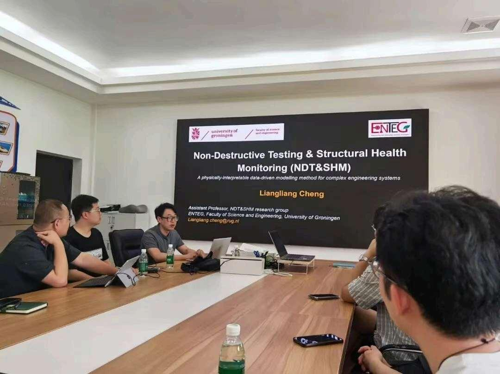
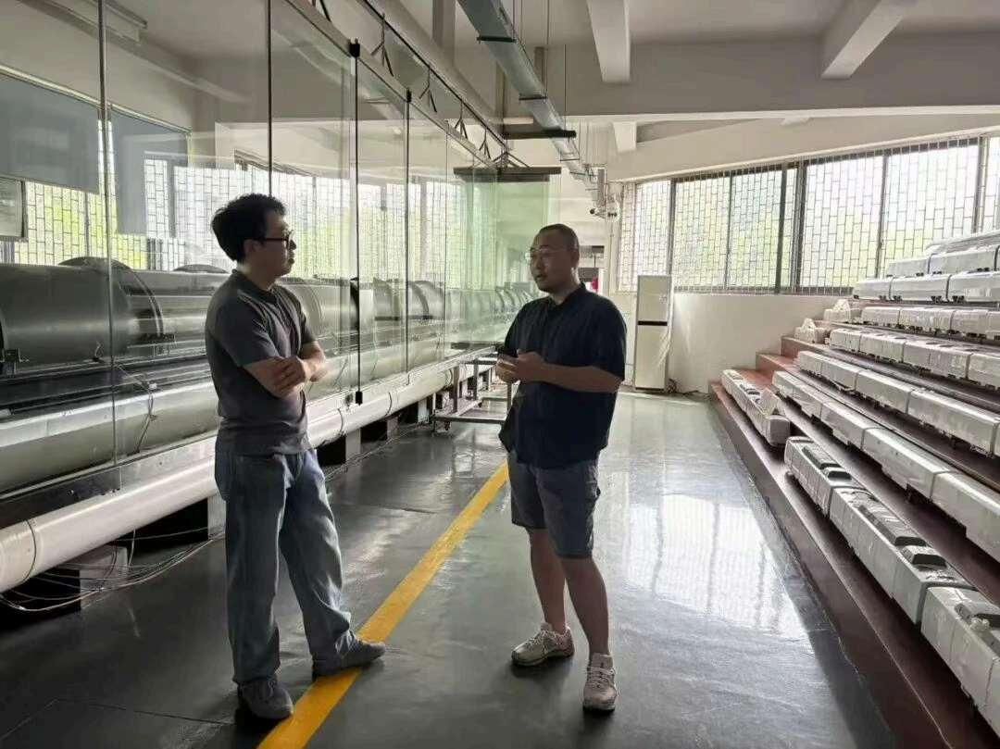

Dr. Liangliang Cheng visits Chinese universities for research exchange
During the summer of 2026, the NDT & SHM Group took part in a series of academic exchanges with universities in China, sharing research on non-destructive testing, structural health monitoring, and physically interpretable data-driven modelling.
Invited research talk at Central South University
In July, Dr. Liangliang Cheng visited Professor Guangjun Gao's research group at Central South University in Changsha. He delivered an invited talk entitled Non-Destructive Testing & Structural Health Monitoring (NDT & SHM): A Physically-Interpretable Data-Driven Modelling Method for Complex Engineering Systems.
Dr. Cheng introduced the University of Groningen, the Engineering and Technology Institute Groningen (ENTEG), and the group's research activities. The discussion covered approaches to non-destructive testing and structural health monitoring, physically interpretable data-driven models for complex engineering systems, and current research projects.
The visit also included a tour of the university's high-speed train research facilities, including equipment for aerodynamic model testing, full-vehicle collision testing, and snow and ice wind-tunnel experiments for railway bogies.
Exchanges with university research groups
Team members also visited Professor Haiping Liu's laboratory at the University of Science and Technology Beijing, the infrared research laboratory at Capital Normal University, and Professor Bo Zhang's research group at Ningxia University.
These visits broadened the team's understanding of related research and experimental capabilities, and provided a basis for further academic exchange and collaboration between the University of Groningen and partner research groups in China.

